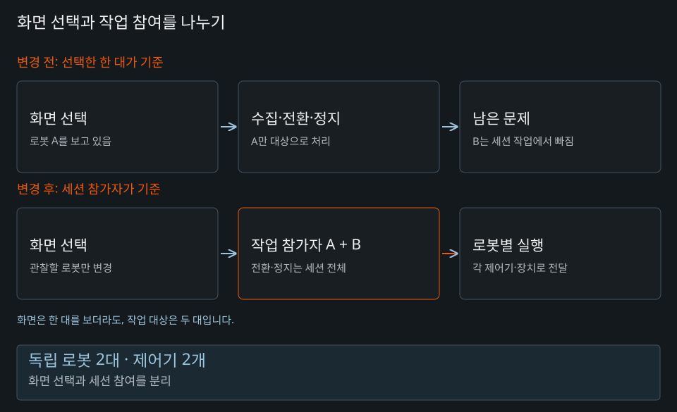
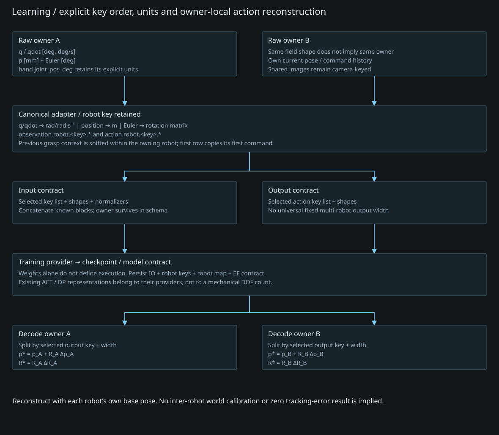
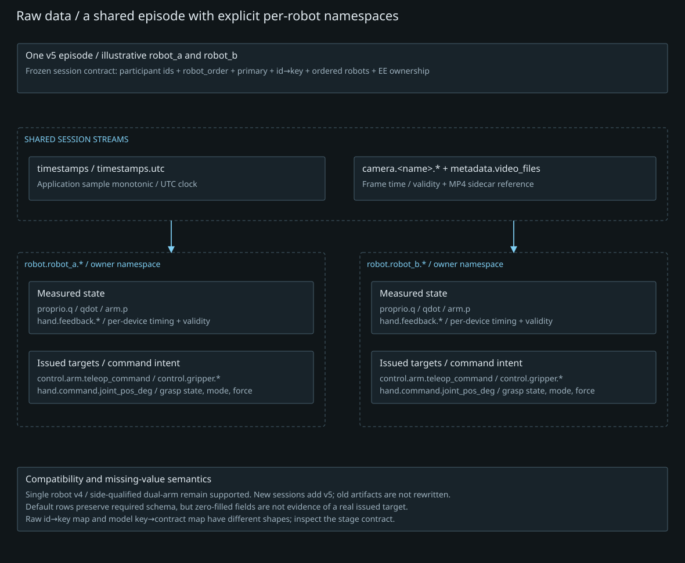

Multi-Robot Platform Expansion
다중 로봇 지원을 위한 플랫폼 확장
2025.12 ~ 2026.06 · 플랫폼 기능 개발·검증
Python · Linux · MiMicX
01 / BACKGROUND
선택된 한 대가 전체를 대표하던 구조
기존 플랫폼은 단일 활성 로봇 중심으로 동작했습니다. 독립 제어기를 가진 협동로봇 2대를 지원하려면 화면에서 보고 있는 대상과 실제 작업에 참여하는 집합을 분리해야 했습니다. 한 대의 양팔을 나누는 문제와 독립된 로봇 두 대의 소속을 나누는 문제도 구분했습니다.
- 화면 선택 / 활성 로봇
- 한 로봇의 명령·상태·장치
- 단일 로봇 데이터
02 / ARCHITECTURE
세션 참여와 로봇 소속을 명시
- 화면 선택: 관찰할 로봇
- Session: 참여 로봇 A + B
- Robot A → 독립 제어기 A / Robot B → 독립 제어기 B
- 로봇 식별자 + 데이터 순서 → 수집 스키마
- 학습 산출물의 로봇 대응 → 추론 출력 → 로봇별 전송
이 도식은 확인한 데이터 흐름을 요약한 논리 구조입니다. 각 로봇의 명령·상태·주변 장치 소속을 분리하고, 화면 선택 변경이 세션 참여 집합을 바꾸지 않도록 처리했습니다.
03 / IMPLEMENTATION
배열의 크기보다 소속과 순서
로봇 식별자와 데이터 순서가 저장·학습·출력에서 이어지도록 처리 구조를 수정했습니다. 같은 크기의 배열도 순서가 바뀌면 다른 로봇에 해당하는 값이 되므로, 수집 스키마와 학습 산출물의 대응을 함께 확인했습니다.
Graph와 Table은 로봇별 소속을 유지하고, Replay는 세션 전체의 실행 대상을 표시하도록 나누었습니다. 화면에서 한 로봇을 보는 상태가 다른 참여 로봇의 정지 대상을 누락하지 않도록 했습니다.
EVIDENCE & IMPLEMENTATION
직접 바꾼 경계: 설정부터 출력 라우팅까지
실제 대상은 독립된 Indy12 두 대였습니다. 한 로봇 안의 left/right 팔로 합치는 대신, 각 로봇의 제어기와 엔드이펙터 소속을 보존하는 robot-keyed 경로를 추가했습니다. 기존 로봇 SDK와 제어·학습 adapter는 재사용했습니다.

| 수정 영역 | 기존 가정 / 관찰 | 직접 변경한 처리 |
|---|---|---|
| 설정·preset | active robot 하나가 작업 전체를 대표 | 참가 목록·stable order·primary를 저장하고 삭제된 로봇 참조를 정규화 |
| Collect 모드·정지 | 화면에서 선택한 한 대만 전환·정지 | backend가 resolve한 세션 전체 대상으로 전환·정지 요청; 전환 실패 시 이미 전환한 로봇을 idle 복귀 |
| 데이터 writer·capture plan | H5에는 두 손, plan에는 선택한 한 로봇의 손 | 로봇별 namespace와 session EE catalog를 사용해 raw·metadata·plan의 대상 집합 일치 |
| 학습 adapter·artifact | 숫자 block의 위치에 소속을 의존 | 선택 key 순서·shape·robot_key_order를 전처리와 모델 산출물에 보존 |
| 추론 decode·전송 | 배열 크기만 맞으면 다른 장치로도 전송될 위험 | artifact의 key별 차원으로 출력 분해 후 owner robot·EE 계약을 검사해 전송 |
같은 크기의 A/B 배열이 바뀌지 않도록
robot_key는 값의 소속이고 robot_order는 결합 순서입니다. 예를 들어 참가자가 A/B이고 저장 순서가 B/A여도 화면 focus를 A로 바꿨다는 이유로 입력을 A/B로 재해석하지 않습니다. 학습에 선택된 key 순서와 각 key의 차원을 artifact에 남기고, 추론에서도 같은 경계로 출력을 나누어 owner에게 전달합니다.

설명용 대응 예시 — 실제 수집 파일의 값이나 dump가 아닙니다.
participants: [A, B] # 작업 참가 집합
robot_order: [B, A] # 직렬화·결합 순서
selected_keys: [B.position, A.position]
artifact: key 순서 + key별 차원 + owner 계약
decode: B block → B의 worker / A block → A의 worker
발견한 불일치와 수정 확인
| 검증 시나리오 | 관찰 및 처리 | 판단 범위 |
|---|---|---|
| A/B 참여 중 화면 focus 변경 | Collect 참가 집합은 유지하고 Move Robot 대상만 변경 | 화면 선택과 수집 대상의 독립성 |
| 로봇 삭제·과거 preset 로드 | 없는 participant/order/primary 참조 정리 | 설정 정규화; 임의 등록 이름을 영구 ID로 간주하지 않음 |
| Collect 전환·정지 | 선택 한 대에만 적용되던 경로를 session 전체 대상으로 수정 | 순차 요청·복귀 실패 가능성과 실제 정지 확인은 구분 |
| raw·plan·metadata 대조 | 두 robot/EE key가 파일과 계획에 함께 존재하는지 확인 | key 존재만으로 유효 신호가 기록됐다고 판단하지 않음 |
| 기존 단일·양팔 데이터 | v4 및 segment 경로를 별도 소비 | 새 v5 robot namespace가 기존 의미를 덮어쓰지 않음 |
Capture sample은 참가자의 snapshot을 순서대로 읽어 한 row에 묶습니다. 같은 sample index가 제어기·카메라의 물리적 동시 측정을 뜻하지는 않습니다. 두 대 구성의 검증을 임의 N대의 성능 보장으로 확장하지 않습니다.
기록 근거: 독립 다중 로봇 지원 기술 기록 ↗
04 / VALIDATION
경계마다 같은 로봇을 가리키는지 확인
참가 목록, 저장 key, 모델 metadata와 전송 대상을 대조했습니다. 세션 참여 로봇 전체의 조작·정지와 기존 단일 로봇 데이터 호환성을 확인했습니다. 설정 복원·수집 파일·학습 입력·출력 decode·실물 동작을 각각 구분해 검사했습니다.
검증 대상은 독립 제어기 기반 로봇 2대입니다. 임의의 N대 확장 성능이나 제어기 수준의 동시 명령 도착을 입증한 결과로 해석하지 않습니다. 학습 경로 연결과 출력 decode 확인도 정책의 전체 실로봇 성공률과 구분합니다.
관련 기록: 기술 아카이브 ↗